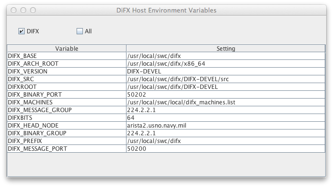

DiFX GUI System Settings Window
The DiFX GUI System Settings window contains all user-editable
parameters that control the configuration and appearance of the GUI,
as well as its communication with the core DiFX software. The
System Settings are organized in a browse-able hierarchy of
"sub-topic" panels that can be opened and closed as needed.
Sub-topic panels include:
Settings File
When the GUI is started it attempts to read an XML file
containing settings for all GUI parameters, window configurations,
etc. This file can either be specified as the first command
line argument when starting the GUI or a default file will be used
(the default file is "conf/guiSettings.xml" under the directory
specified by the environment variable "DIFXROOT", or, failing
that, the user's directory). Failing to read either a
specified file or the default file will cause internal default
settings to be used which may or may not be attractive. When
the GUI is exited the same XML file is written to reflect the
GUI's current state such that it can be started again in the
future essentially unchanged from where it was left.
Failures to read or write files will generate pop-up warnings, but
won't terminate the GUI's operation.
The Settings File section of the Settings Window can be used to
pick a new XML file name for reading or writing. This can be
useful if you want to save a specific GUI state for later use or
load a previously saved state:

Current
This field shows the full path to the XML file that was most
recently read, and that will be written to upon exit. If
this field is in red it indicates that the last read attempt
failed for some reason and that whatever settings that existed
previously are still in place.
Open
Open can be used to open an existing XML file that contains GUI
settings. A file browser will allow the file to be picked.
Save
Save causes the current GUI settings to be written to the XML
path in the "Current" field.
Save As...
This button produces a file browser from which a path for the
XML file can be picked. The XML file is written to
immediately.
Defaults
The Defaults button will restore the GUI to internal
defaults.
DiFX Control Connection
The DiFX Control Connection settings determine how the GUI
communicates with and controls DiFX. In normal operation the
GUI makes a TCP connection with the guiServer process running on the DiFX "Host"
node. To complicate matters however, there are actually
three ways the GUI and DiFX can interact:
- The TCP connection between the GUI and guiServer is used for all
controls and data exchanges. DiFX multicast message
traffic is collected by guiServer
and relayed over the TCP socket to the GUI (for more information
about message traffic, see the DiFX
Multicast Messages section below). This
configuration is used when the GUI is running outside the DiFX
LAN, such that the multicast messages cannot be received
directly.
- The TCP connection between the GUI and guiServer is used for
controls and all data from guiServer
itself, however DiFX multicast messages are received directly
using a UDP socket. This is the preferred arrangement when
the GUI is running on the DiFX LAN where multicast messages are
received.
- No connection is made to guiServer. The GUI
receives DiFX multicast messages directly using a UDP socket,
essentially acting as a monitor of DiFX activity. The GUI
can also issue some commands directly to DiFX using its own
multicast messages, but the command set available is limited and
in the long run this capability will not be supported.
The DiFX Control Connection panel includes settings that will
determine in which of the above modes your GUI will interact with
DiFX, as well as port and version specifications. Details
about each control/display item are outlined below.

The DiFX Control Connection setting determine how commands are sent
to DiFX. Processing and data nodes should all be running mk5daemon to send and receive
XML messages (if the "Broadcast Monitor" light next to a node in the
Hardware Monitor window is blinking green occasionally, then mk5daemon is running on that
node). Control commands that start, stop, and otherwise
manipulate jobs are sent to the mk5daemon
running on one particular node (usually this is the "head node", but
this is not a requirement).
Multicast/guiServer Checkboxes
guiServer Connection Light
DiFX Host
This is the hostname of the node which is to receive DiFX control
commands (job start, stop, etc). This node must be running mk5daemon, obviously, for this
to work. In addition, the "root" user on this node must be
able to "ssh" to the DiFX user (see below) on each processing and
data source node without typing a password or RSA key. If you
are having trouble with RSA (we did), try the following. As
"root" on the DiFX host, make sure you have an RSA key (in the file
.ssh/id_rsa.pub in
root's home directory). If you don't, create one with the
following command (answer any questions by hitting "return"):
ssh-keygen -t rsa
You will have to log out and log back in for the new key to be
active, or type:
ssh-add
Then type this for every node
you are using, including the DiFX host itself. You should use
complete addresses for machine names, not aliases (it is not
entirely clear that this is a problem, but we had some issues with
it):
ssh-copy-id user@node
For instance, if your DiFX user is "difx", your DiFX host is "king"
and your other processing nodes and mark 5's are "pawn1", "pawn2",
"mark5-1" and "mark5-2" you would need to do the following (as root
on "king"):
ssh-copy-id difx@king
ssh-copy-id difx@pawn1
ssh-copy-id difx@pawn2
ssh-copy-id difx@mark5-1
ssh-copy-id difx@mark5-2
These commands must be run as "root" on the DiFX host node. It
is important that you log in as root (i.e. not ssh!) because you
want to guarantee that it is the root key that is being
copied. Log completely out of the machine and log in as
root! Trust us on this!
To test whether this has worked, you should be able to "ssh" to your
DiFX user on all nodes from root on the DiFX host node without
entering a password or key. If you can't do this, things are
not set up right and jobs will not run.
These changes should survive reboots, as well as RSA key stuff ever
does.
Control Port
This is the broadcast port for control communications.
Normally it is the same as the Port setting under Broadcast Network
(default is currently 50200).
Transfer Port and Max Open Ports
The Transfer Port and Max Open Ports
determine the port numbers that will be used to transmit data from
guiServer to the GUI. The GUI often has cause to
request sets of data from the guiServer - the contents of
files, directory listings, etc. - that are then transmitted using
quick TCP connections that are opened as necessary and closed when
no longer needed. Whenever such a request is made it is
accompanied by a unique port number that is then used by guiServer
for the data transfer. The Transfer Port number specified
here is a "base" number that is used to form the unique port
numbers - port numbers increment from this base up to Max Open
Ports, and then recycle at the Transfer Port number. Locking
mechanisms assure that port numbers aren't reused until they have
been closed.
The user probably doesn't need to worry about these numbers much,
except to make sure there are no port restrictions that apply to
the range defined. If file transfers appear to be slow
(pop-up monitors of file transfers will let you know this) it is
possible that increasing Max Open Ports will help you, although it
is critical that Max Open Ports not be changed when any ports
are in use.
Monitor Host and Port
The Monitor Host and Port are used to specify the connection to
the difx_monitor server. This is a process that
provides real-time data feedback that can be used to monitor a
running job. The documentation on the Job Monitor has more
detail about this.
User
This is the DiFX user - the owner of all DiFX-related data files and
directories and the user that is running guiServer on the
DiFX Host. By default this user is "difx" but this is not a
requirement.
guiServer Version and Build History
When a connection is made with guiServer it transmits its own
version and the version of DiFX under which it was compiled.
The two read-only fields labeled "guiServer Version" and "build
w/DiFX" display this information. For the most part these
items won't make any difference, however they can be used to
trouble-shoot problems that may occur due to version mismatches.
These fields are filled only when using guiServer.
Environment Variables Display
The "Environment Vars" button creates a display of DiFX Host
environment variables as seen by guiServer:

All environment variables regardless of their
applicability can be displayed, or only those that apply to DiFX
may be selected (at the moment this distinction is determined
rather simplistically - by whether or not "DIFX" is the first four
characters in the variable name, but this capability maybe made
more sophisticated in the future). The settings of
environment variables can be used to determine how several GUI
options should be set.
DiFX Version
The DiFX Version is passed to mk5daemon when running a correlator job. It
should match the version of DiFX being run on the head node. Don't worry too much about this field
- currently it does nothing!
DiFX Path
The DiFX Path field allows you to set the path mk5daemon will follow when
running DiFX executables (specifically vex2difx and mpirun)
- it points to the top level of your DiFX software tree on your
DiFX host (e.g. "/usr/local/difx"
or something similar). Using this field you can easily
switch your processing between different versions of DiFX
software, if, for instance, you want to test an upgrade of the
software. For normal operation you can leave this field
blank, in which case mk5daemon
will use the environment variable DIFX_PREFIX to determine the path.
DiFX Multicast Messages
DiFX uses UDP multicast messages to periodically broadcast the
status of individual nodes and the state of running jobs -
information the user interface displays. The messages
originate (with some exceptions) from the mk5daemon process
that should be running on each node in the DiFX cluster. This
same multicast system is used by the user interface (either through
guiServer or directly) to
communicate with mk5daemon
and control the components of the software correlator.
Relay Using guiServer Connection
Being based on UDP, the multicasts will only work within a local
area network. However, if you are connecting to the guiServer to control DiFX you
can elect this option to "relay" all multicast messages through the
TCP connection between the user interface and guiServer. All messages
on the DiFX subnet are collected by guiServer and retransmitted to the user interface
where they are parsed and displayed exactly as if the user interface
were on the subnet. This option is only available if the DiFX
Control Connection is set to "guiServer" (see above).
Group Address
This address is used to identify the UDP multicast "group" that mk5daemon is using. It
should match the DIFX_MESSAGE_GROUP environment variable setting
used when starting mk5daemon
on all processing and data source nodes (run mk5daemon with the "-h" option
for details). At the moment the default value for this
environment variable, and thus the setting you should probably use
here, is "224.2.2.1".
Port
The port is used for UDP multicasts. This should match the
value of the DIFX_MESSAGE_PORT environment variable in place when mk5daemon was started on each
node. At the moment the default value for the environment
variable, and thus this field, is 50200.
Buffer Size
This is the maximum size of a broadcast message, in bytes.
Probably this shouldn't be fiddled with too much - making it too
small will cause UDP messages to be incompletely read. It is a
block of memory that must be allocated for each incoming message, so
it shouldn't be huge either.
Timeout (ms)
The timeout is the number of milliseconds that the system will wait
for an incoming broadcast message. It can be set to 0, which
means "wait forever", although this might be unhealthy (killing the
thread that reads messages will become difficult). Otherwise
it does little more than govern the update rate of the Packet
Traffic Plot (see below).
Packet Traffic Plot
The Packet Traffic Plot shows all received UDP messages as they are
read in real time. If you are receiving messages (i.e. all of
the above settings are set properly) this should have a heartbeat
appearance - there should be occasional spikes as messages come in
(the height of the spikes is the size of messages relative to the
Buffer Size). If, on the other hand, you get a "flat line",
your settings are wrong, or mk5daemon
isn't running anywhere visible on the local area network.
Below is a "healthy" Packet Traffic Plot showing a series of UDP
messages over time:

Suppress "Unknown Message" Warnings
This check box was put in place to avoid annoying error messages
during development and is largely obsolete. It will probably
be removed in the near future.
Identify Mark5 Unit Names by Pattern
This check box and text field cause the GUI (primarily in the
Hardware Monitor Window) to determine whether multicast messages
are from Mark 5 Modules or Processor Nodes based on machine
names. If the box is checked the machine name of the source
of each message is compared to a list of comma-separated "regular
expressions" contained in the text field. If it matches any
one of them, the message is assumed to be from a Mark 5 unit and
is sorted accordingly.
Regular expressions are extremely useful for pattern matching,
but if you haven't used them before they can be less than 100%
intuitive. There are many online resources that explain them
in excruciating detail. The default value for patterns
"mark5.*" matches the NRAO practice (duplicated at USNO) of naming
all Mark 5 machines such that they start with the five characters
"mark5", as in "mark5-101.foo.edu".
Database Configuration
Database trouble? See Trouble-shooting the Database
Configuration.
The Database Configuration settings control the access the GUI has
to the DiFX database. The DiFX database contains settings and
status for experiments, passes, and jobs that appear in the Queue
Browser window. The GUI remotely accesses the database using a
network connection (the database can also be consulted on the
command line by running a client program either remotely or on the
DiFX database host). The following fields govern the GUI's
remote access to the database:
Use Data Base
This checkbox determines whether the GUI is using the database at
all. If checked, changes to experiments, passes, and jobs in
the Queue Browser will be reflected in the database, and items in
the database will appear in the Queue Browser. If not,
experiments, passes, and jobs will only appear in the Queue Browser
if they are created by the same instance of the GUI - any
information about them will be lost if the GUI is shut down and
restarted. Beyond this capability, the database is not
required - the GUI will still be able to run DiFX without it.
Version
The version field is not currently in use, but may be used in the
future to coordinate the GUI with changes that may be made to the
database structure. It is set to the most recent version of
the database that the GUI can properly parse (at the moment this
is the only version is
can parse). Changing it will have no effect.
Host
The database Host is the hostname of the host that contains the DiFX
database. The named host should be accessible through normal
network connections, and the hostname itself must be recognized by
the name lookup scheme on the GUI machine. The ping test can be used to test the
hostname.
User
The user is the username for the DiFX database. This is the
name you would use when running the a database command line client
on the DiFX host as in the following example (using a mySQL client):
mysql -u USER
It does not necessarily match the username you may use to log into
the DiFX host. The database must be set up to recognize this
user, including access to the
database from the host where the DiFX GUI is running.
See Problems with Database Remote
Access in the trouble-shooting section for details.
Port
The JDBC Port is the port over which remote communication with the
database occurs. The default port for most mySQL installations
is 3306, so that is probably what you should be setting yours to (if
you are using the mySQL database management system). Consult
the /etc/services file on the database host to find
out which port is being used.
Password
This is the password for the username in the database. This is
the password you would use when prompted by the database command
line client on the database host. This password is set by the
database administrator or by the user through the database
client. It is not necessarily the same password you would use
to log into the database host.
DifX Database
The DifX Database is the name of the database. At the time of
this writing the rest of the DiFX software (difxqueue, etc) uses the
database named "difxdb", so that is the default value for this
field. Unless you feel you know better, it probably shouldn't
be changed.
Management System
The database management system is the "application" used to
administer and access the DiFX database for your location, such as
mySQL, Postgresql, etc. (this is sometimes called the database
"vendor"). The management system is set up by your database
administrator when the DiFX database is initialized (this is all
done using a management system-specific "schema", as described in
the database documentation). Management systems known to
function with the GUI include mySQL and Postgresql. If you
change the management system you will also have to change the
driver - see the table below for drivers that are known to work
with each management system.
Driver
This is the "driver" used by Java to give the GUI access to the
database. The driver is specific to the database management
system, and must be something Java has access to. The GUI is
delivered with drivers appropriate for a couple of popular (and
free) management systems, as outlined in the table below.
Management System
|
Driver
|
mySQL
|
com.mysql.jdbc.Driver
|
Postgresql
|
org.postgresql.Driver
|
If your database installation uses a different management system,
you may wish to petition the GUI development group to include it.
Periodic Update
This check box tells the Queue Browser to automatically check the
database for changes after a given time interval, which you can
set. The usefulness of automatic checking is dependent on
whether or not other users might be changing the database while you
are running the GUI. If your GUI instance is the only source
of database changes it is essentially pointless as all changes you
make will be recognized anyway. If, on the other hand, other
users are making changes, the automatic update will make them appear
in real time (or reasonably close to it if you make your interval
short).
Trouble-shooting
the Database Configuration
A number of things can go wrong when trying to access the DiFX
database remotely. The Database Configuration panel contains a
few tests that can be used to troubleshoot the database connection.
Ping Test
The Ping Test is run by hitting the "Ping Host" button. It can
be used to establish two things:
- Can the name for the DiFX host be resolved - i.e. does the
host name make any sense?
- Is the host reachable with the current network configuration -
i.e. is it out there?
The Ping Test performs attempts six "pings" of the named host,
reporting the results in the results panel. A successful ping
test will return statistics for each of the pings along with an
overall statistical summary:

Ping Test failures will produce alarming red text in the results
panel. The reported failure should give you an idea what is
wrong. For instance, the following indicates that the given
hostname cannot be resolved, either by your local host table or by
your name server:

The following screen would indicate a bad network connection at the
GUI machine:

Finally, the name may be resolved and the network may be good but
the named host may not answer either because it is down or it is not
properly connected to the network:

Database Connection Test
The Database Connection Test makes a comprehensive test of the
current database settings by trying to access the DiFX job queue and
getting a list of all jobs out of it (this is exactly what the Queue
Browser does to access the queue data). It is run using the
"Test Database" button. When run, the test forms a URL out of
host name and port number (this URL is reported in parenthesis in
the results panel), then attempts to create a connection using the
URL, the user, and the password. If this is successful, the
DiFX database is consulted to obtain a list of all queued
jobs. The Database Connection Test reports the number of jobs
in the queue and exits.

Problems with Database
Remote Access
The following is a list of some of the errors that might be produced
by the Database Connection Test and what can be done about
them. Note that these errors may also be reported in the
Message Window as the GUI tries to access the DiFX queue in the
database.
SQLException: Communications link failure The last
packet sent successfully to the server was 0 milliseconds ago.
The driver has not received any packets from the server.
This error indicates that the connection to the remote mySQL
database failed. Check that the DiFX host exits and in on the
network (using the Ping Test).
Then remote log into that host and see if the mySQL server is
runing:
ps -ef | grep mysql
Both mysql_safe and mysqld should be running.
The latter is the mySQL server, the former is used to start it
when/if it shuts down. In a proper installation of mySQL these
programs should be running automatically after boot up. If
they ARE running, see if a mySQL client can be run (the path may be
different):
If it cannot be run, this may indicate an incorrect or incomplete
mySQL installation.
SQLException: Access denied for user 'difxw'@'10.1.2.45'
(using password: YES)
/usr/bin/mysql -u root -p
Then generate a list of all users and hosts recognized by mySQL:
mysql> select user, host from mysql.user;
+------+---------------------+
| user | host |
+------+---------------------+
| difx | 10.1.2.45 |
| difx | 127.0.0.1 |
| root | 127.0.0.1 |
| | localhost |
| difx | localhost |
| root | localhost |
| | swc02.usno.navy.mil |
| difx | swc02.usno.navy.mil |
| root | swc02.usno.navy.mil |
+------+---------------------+
9 rows in set (0.00 sec)
In this list somewhere should be the user name you are using paired
with the GUI host name. Note that mySQL treats user/host pairs
almost as separate users - you must designate both your user name
and host as a "user". To do this, the following command will
both "create" the user/host pair and give it access to all databases
(note that "grant" is a complex command used for many things - you
should consult mySQL documentation before using this command with
reckless abandon):
mysql> grant all privileges on *.* to 'difx'@'new.host.name';
Query OK, 0 rows affected (0.00 sec)
You should then see the user/host pair in the user list:
mysql> select user, host from mysql.user;
+------+---------------------+
| user | host |
+------+---------------------+
| difx | 10.1.2.45 |
| difx | 127.0.0.1 |
| root | 127.0.0.1 |
| | localhost |
| difx | localhost |
| root | localhost |
| difx | new.host.name | <---------------- HERE!!!!
| | swc02.usno.navy.mil |
| difx | swc02.usno.navy.mil |
| root | swc02.usno.navy.mil |
+------+---------------------+
10 rows in set (0.00 sec)
The user/host pair needs its own password specification - even if
your user name already had a password, this is not enough! To
specifiy the password for the new user/host pair (or to make sure
your password is set properly on an existing user/host pair), do the
following (replaced "PASSWORD" with your new password):
mysql> set password for 'difx'@'new.host.name'=password( 'PASSWORD' );
Query OK, 0 rows affected (0.00 sec)
At this point we reach the limits of my personal mySQL knowledge.
Database contains 0 jobs.
This is not an error, however you may encounter this message.
It simply means there are no jobs queued in the specified
database. If this is not what you expect (because, for
instance, you've recently queued something), check the value in the
"DiFX Database" field. It should match your the name of the
database where queuing is going on (which is probably "difxdb").